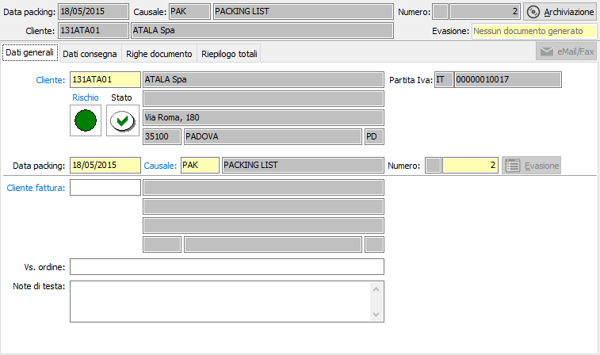
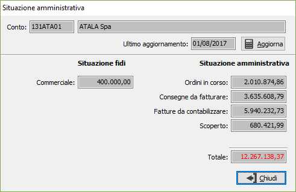
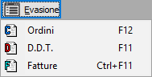

Dati generali
All’inizio di un nuovo packing list il cursore è posizionato sul campo cliente della linguetta dati generali, da cui inizia l’inserimento.

CLIENTE: codice alfanumerico di 8 caratteri, presente in anagrafica clienti, che individua il cliente da trattare. Sul campo, la cui compilazione è obbligatoria, sono attive le funzioni di ricerca (F9) ed accesso rapido alla tabella (CTRL+W) per eventuali nuovi inserimenti o variazioni. Il codice inserito in questo campo è quello del cliente a cui è intestato il packing list. Dopo aver selezionato il codice del cliente vengono visualizzati, senza possibilità di modifica, i dati anagrafici. Se presente nella linguetta preferenze dell’anagrafica cliente, viene anche compilato automaticamente il successivo campo causale packing con la causale esistente in anagrafica. La procedura non consente l’inserimento del packing list nel caso in cui il campo Codice stato dell’anagrafica cliente contenga i valori Bloccato o Spedizioni sotto controllo.
Vengono visualizzati, tramite appositi indicatori visivi, lo stato di rischio, derivante dal Company Shield e lo stato di affidabilità derivante dalla situazione amministrativa; cliccando sull'etichetta Rischio viene mostrata la legenda che spiega i significati dei colori mostrati, cliccando invece sull'indicatore colorato, se il servizio Credit Shield è attivo e ci sono informazioni, si accede direttamente all'analisi della partita Iva con quella riportata sul documento, posizionati sulle informazioni semaforiche. Se lo stato di rischio non viene visualizzato significa che il servizio è attivo, ma l'utente con cui si è collegati non è configurato come utente Company Shield oppure non ha l'abilitazione alla visualizzazione dei semafori.
Sia l'indicatore di rischio che l'indicatore di stato non causano alcun blocco all’inserimento del documento, ma si limitano a mettere sull’avviso l’utente.
Gli indicatori di stato possono essere così riassunti:
punto interrogativo: indica che non è presente nessun valore da controllare;
segno di spunta verde: indica che è presente un fido sufficiente a coprire gli eventuali scoperti;
punto esclamativo su fondo giallo: indica di fare attenzione perchè non è presente nessun fido ed è presente uno scoperto;
X su sfondo rosso: indica che è presente un fido che non è sufficiente a coprire lo scoperto.
Cliccando sull'immagine, se gestiti i saldi clienti/fornitori in configurazione, si attiva la finestra video di Situazione amministrativa che consente di visualizzare il fido concesso e la situazione amministrativa dettagliata; nel caso esista uno scoperto di fido il totale viene evidenziato in rosso. L’eventuale saldo negativo fra i vari valori non comporta tuttavia alcun blocco, ma consente all’utente di decidere in merito all’opportunità di inserire il documento.

DATA PACKING: campo data in cui viene visualizzata la data di sistema, modificabile dall’utente.
CAUSALE: codice alfanumerico di 3 caratteri presente nella tabella Causali Packing che definisce la tipologia del packing list in esame. Se, presente, viene visualizzata la causale esistente nelle preferenze dell’anagrafica del cliente in esame, modificabile dall’utente. Sul campo sono attive le funzioni di ricerca (F9) ed accesso rapido (CTRL+W) sulla tabella stessa.
NUMERO: campo numerico che contiene il numero progressivo del packing list. Viene compilato automaticamente dal programma in base alla serie contenuta dalla causale. E’ modificabile dall’utente.

Premendo l'apposito pulsante Evasione, compare un menù che consente l'evasione dei documenti o generazione da documenti; se la voce non è attiva significa che non ci sono documenti da evadere di quel tipo o che non è possibile effettuare nessuna generazione. Accanto alla voce sono visualizzati anche i tasti funzione per la relativa evasione. Premendo il tasto F12 è possibile effettuare la selezione degli ordini, da inserire nel packing list; premendo il tasto F11 è possibile effettuare la generazione del packing dai documenti di trasporto, e premendo Ctrl+F11 è possibile effettuare la generazione del packing dalle fatture.CLIENTE FATTURA: codice alfanumerico di 8 caratteri, presente in anagrafica clienti, che individua l’eventuale cliente, diverso da quello a cui è intestato il packing, a cui deve essere intestata la fattura. Sul campo sono attive le funzioni di ricerca (F9) ed accesso rapido (CTRL+W) sulla tabella stessa. Confermando il codice del cliente vengono visualizzati, senza possibilità di modifica, la ragione sociale e l’indirizzo dello stesso.
VOSTRO ORDINE: campo alfanumerico per l’eventuale descrizione degli estremi dell’ordine del cliente.
NOTE DI TESTA: Campo memo dove inserire eventuali note di testa del documento.